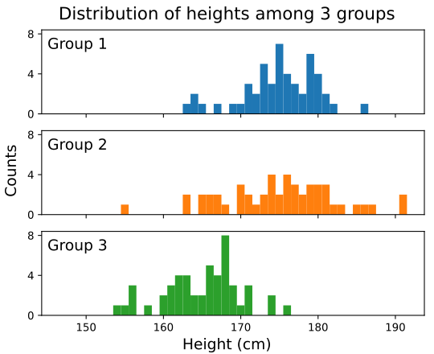

A little bit of statistics#
# initialization: make numpy available
import numpy as np
Since a good number of numpy reduction functions are statistics functions, it is a good time to review some statistics. As a simple example, consider measurement (in cm) of heights from 3 distinct groups, as recorded below:
heights_1 = np.array([
177, 169, 182, 173, 171, 179, 179, 171, 175, 163,
180, 179, 179, 164, 173, 175, 177, 176, 181, 167,
173, 171, 175, 177, 181, 172, 178, 165, 174, 180,
173, 176, 180, 180, 179, 174, 175, 173, 179, 186,
175, 172, 175, 164, 176, 170, 174, 175, 178, 176
])
heights_2 = np.array([
181, 163, 163, 174, 170, 173, 177, 174, 179, 187,
167, 174, 177, 173, 183, 155, 191, 165, 176, 180,
168, 178, 180, 179, 167, 191, 176, 165, 180, 175,
178, 146, 185, 176, 176, 171, 181, 182, 177, 186,
175, 171, 166, 170, 181, 174, 172, 179, 166, 170
])
heights_3 = np.array([
166, 167, 167, 166, 167, 171, 161, 162, 171, 158,
169, 156, 162, 168, 163, 164, 168, 155, 165, 166,
163, 161, 161, 167, 156, 166, 162, 163, 168, 168,
166, 165, 169, 174, 168, 160, 154, 174, 156, 171,
168, 163, 168, 160, 170, 162, 168, 169, 164, 176
])
Plotting each individuals as data point on a figure, we obtain the visualization below (you’ll learn how to create histogram next week):

We can tell that all three groups have distinct distribution. For example:
Group 1 and group 2 are on average taller than group 3
Group 2 has a larger spread in height compared to group 1 and 3
In general, if we want to characterize a distribution with a few numbers, we will be most interested in a measure of central tendency and a measure of spread.
Central tendency#
For a measure of central tendency, one possible choice is the mean. If the measurements are \((x_1, x_2, \ldots, x_n)\), the mean of the measurements is defined as:
If we compute the means of the 3 groups, we’ll get:
mean_1 = np.mean(heights_1)
mean_2 = np.mean(heights_2)
mean_3 = np.mean(heights_3)
print(
"MEANS: group 1 = " +
str(round(mean_1, 2)) +
" cm, group 2 = " +
str(round(mean_2, 2)) +
" cm, group 3 = " +
str(round(mean_3, 3)) +
" cm"
)
MEANS: group 1 = 174.92 cm, group 2 = 174.46 cm, group 3 = 165.04 cm
Another measure of central tendency, which is mathematically less “neat” but more robust against outliers, is the median. By definition, the median is the data point at which equal number of data is below it and above it (if there is no data point exactly half-way, an interpolation is carried out between the nearest two data points). For our 3 groups:
median_1 = np.median(heights_1)
median_2 = np.median(heights_2)
median_3 = np.median(heights_3)
print(
"MEDIAN: group 1 = " +
str(round(median_1, 2)) +
" cm, group 2 = " +
str(round(median_2, 2)) +
" cm, group 3 = " +
str(round(median_3, 3)) +
" cm"
)
MEDIAN: group 1 = 175.0 cm, group 2 = 175.5 cm, group 3 = 166.0 cm
In both case, we see that the central tendency for group 1 and 2 are roughly the same, and are both distinctively higher than that of group 3.
Spread#
For spread, a common measure is the standard deviation. To define the standard deviation, we first define the variance:
where \(n' = n\) if you have the whole population and (more often) \(n' = n - 1\) when you have a sample of the population (for the most part we’ll not worry about this distinction here). Once the variance is calculated, the standard deviation \(\sigma\) is obtained as the square root of the variance. The advantage of taking the square root is that the standard deviation will have the same dimension as the mean.
For our 3 groups:
stdev_1 = np.std(heights_1)
stdev_2 = np.std(heights_2)
stdev_3 = np.std(heights_3)
print(
"STANDARD DEVIATION: group 1 = " +
str(round(stdev_1, 2)) +
" cm, group 2 = " +
str(round(stdev_2, 2)) +
" cm, group 3 = " +
str(round(stdev_3, 3)) +
" cm"
)
STANDARD DEVIATION: group 1 = 4.84 cm, group 2 = 8.29 cm, group 3 = 4.944 cm
We see that indeed, group 1 and group 3 have similar standard deviation, both of which are distinctively smaller than group 2.
Another possible measure of spread is the inter quartile range. By definition, the \(q\) quantile (\(0 \leq q \leq 1\)) is the data point at which a portion \(q\) of data is below its value. Similar to median, an interpolation is used when there are no exact data point at the required portion \(q\). The upper quartile is defined as the 0.75 quantile, and the lower quartile is defined as the 0.25 quantile. Finally, the inter-quartile range (IQR) is defined as the difference between the upper quartile and the lower quartile.
Similar to mean versus median, the IQR is mathematically less “neat” than the standard deviation but more robust against outliers.
For our 3 groups:
IQR_1 = np.quantile(heights_1, 0.75) - np.quantile(heights_1, 0.25)
IQR_2 = np.quantile(heights_2, 0.75) - np.quantile(heights_2, 0.25)
IQR_3 = np.quantile(heights_3, 0.75) - np.quantile(heights_3, 0.25)
print(
"IQR: group 1 = " +
str(round(IQR_1, 2)) +
" cm, group 2 = " +
str(round(IQR_2, 2)) +
" cm, group 3 = " +
str(round(IQR_3, 3)) +
" cm"
)
IQR: group 1 = 6.0 cm, group 2 = 9.75 cm, group 3 = 6.0 cm
And we arrive at the same conclusion as we would have using standard deviation as the measure of spread.
Standard error#
As a general observation, when you take samples of increasing size, your estimation of the population’s mean from the sample’s mean improves. As it turns out, if you take multiple samples of size \(n\) and consider the standard deviation in the mean values of these samples, we have:
Thus, the quantity \(\sigma/ \sqrt{n}\) is referred to as the standard error in the estimate of the mean.
Conceptually, if the difference in the means between two samples are big compared to the standard error in either of them, it is higher unlikely that the difference is a result of statistical fluke.
We can calculate the standard error in our 3 groups like so:
stderr_1 = np.std(heights_1) / np.sqrt(heights_1.size)
stderr_2 = np.std(heights_2) / np.sqrt(heights_2.size)
stderr_3 = np.std(heights_3) / np.sqrt(heights_3.size)
print(
"STANDARD ERROR: group 1 = " +
str(round(stderr_1, 2)) +
" cm, group 2 = " +
str(round(stderr_2, 2)) +
" cm, group 3 = " +
str(round(stderr_3, 3)) +
" cm"
)
STANDARD ERROR: group 1 = 0.68 cm, group 2 = 1.17 cm, group 3 = 0.699 cm
From which we may conclude that the observed difference between the means of the heights of group 1 and group 3 are unlikely to be a statistical fluke.